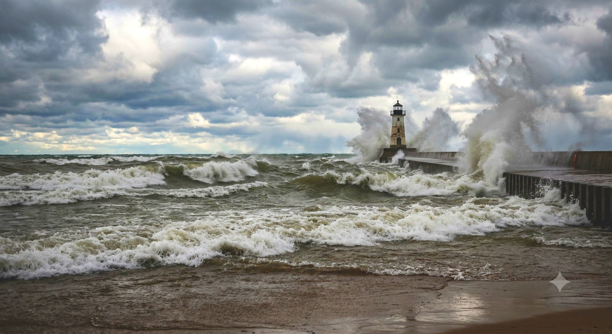
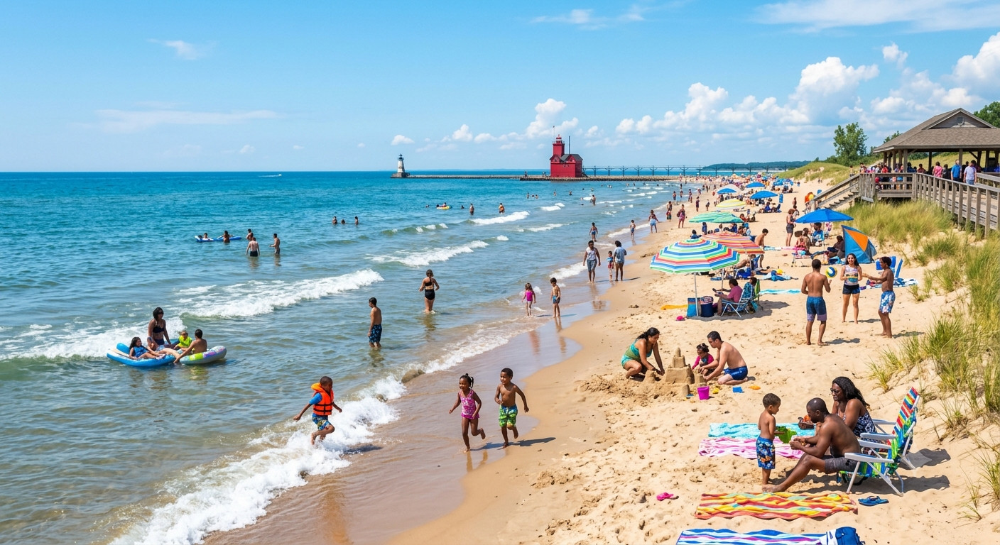
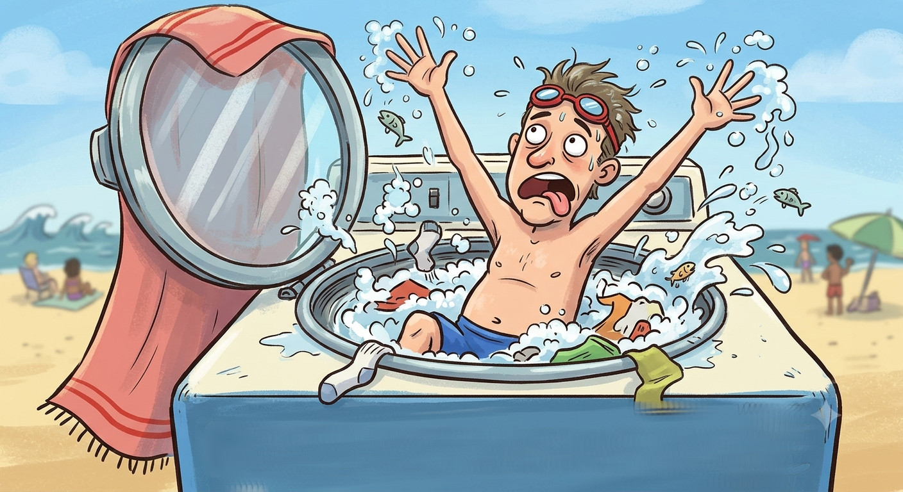
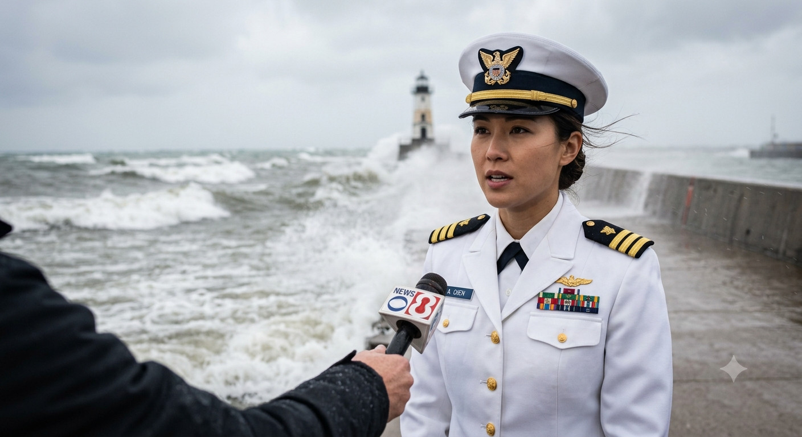

Great Lakes, Swimming, and a Caveat

Imagine a body of water so massive that it holds about 20% of the entire world's surface freshwater. This group of connected lakes are called the Great Lakes. They were carved out by ancient glaciers and are situated between the USA and Canada.
These lakes are vital to the sustenance, economy, and ecology of the area. They provide drinking water to over 40 million people, and support massive shipping and fishing industries. They provide important wetlands for birds and fish, and critical habitats for more than 3,500 plant and animal species.
The Great Lakes support a massive, booming tourism industry that draws millions of visitors annually and generates over $16 billion in economic activity. The region has become one of North America's premier outdoor and luxury travel destinations.

One of the most popular attractions for both tourists and locals alike are the pristine sandy beaches. And one of the most popular activities, of course, is swimming. But there are some caveats for Great Lakes swimmers.
Experts warn that swimming in a Great Lake can actually feel like being trapped inside a giant washing machine. "The frequency of the waves is much greater here than in the ocean," explains Scott Rozenthall, a meteorologist from the National Weather Service. "They just keep battering you down, and the constant action wears you out quickly."

Unlike ocean waves, Great Lakes waves are mostly whipped up by the wind. This makes them incredibly chaotic, crashing into you from all different directions. On the ocean, you usually have time to recover between waves. But here? "They come in fast and close together," warns the weather service. "If a wave knocks you down, you only have three to five seconds to get back up before the next one hits."
We have all witnessed this struggle at the beach. You might see someone just a few feet from the shore, desperately fighting the water to reach the safety of the sand. Even standing at the waterline can be tricky, as the powerful waves quickly suck the sand right out from under your feet.
Furthermore, strong winds create dangerous underwater currents, especially near piers and breakwaters. Things get hazardous very quickly once waves reach a height of three feet; in fact, over 85 percent of rescue incidents happen at this wave size. The official advice is simple: "You are no match for the power of these waves. If you want to jump in, wear a life jacket."

Even experienced professionals are caught off guard. Captain Lena Pamali noted that U.S. Coast Guard members who transfer from the Atlantic or Pacific oceans are always shocked by the sheer intensity of the Great Lakes.
"The conditions here are surprisingly fierce," Rozenthall laughed. "But hey, at least we still don't have sharks!"
So, the next time you visit these beautiful waters, enjoy the view—but respect the washing machine!